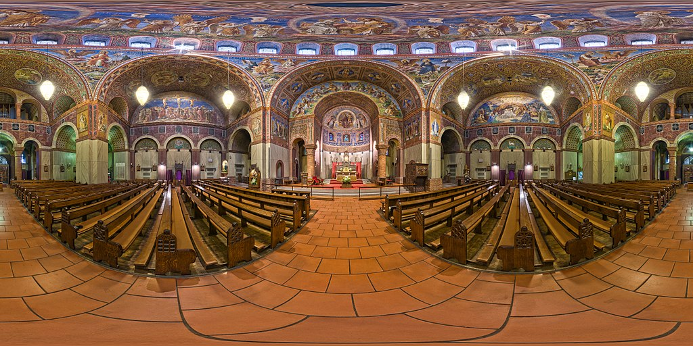

The first thing we're going to learn is how to correctly set up an HTML document to create a basic A-Frame scene with basic HTML elements.
The easiest way to get started with A-Frame is by linking to the latest build hosted on a CDN. A-Frame can also be imported with NPM as part of a workflow using Node.js, which we'll learn later. But for now, let's stick with the easier process.
<!DOCTYPE html>
<html lang="en">
<head>
<meta charset="UTF-8">
<title>A-Frame Tutorial 1</title>
<script src="https://aframe.io/releases/0.9.0/aframe.min.js"></script>
</head>
<body>
</body>
</html>
After adding the script tag, we need to add a scene tag to the body of the HTML document. This is what the most basic A-Frame scene will look like:
<body>
<a-scene></a-scene>
</body>
Before we finish this first lesson, let's add a purple sky primitive to the scene so we have something to look at. The <a-sky> primitive allows you to easily add a huge sphere to the scene. You can make the sphere a solid color, add a custom shader, or easily map an equirectangular image to the inside.
<body>
<a-scene>
<a-sky color="#551A8B"></a-sky>
</a-scene>
</body>
This is what your WebVR scene should look like:
That's very boring. Let's add an equirectangular image to the sky sphere so we feel like we're actually in a new place. An equirectangular image is one that maps cleanly to a sphere. It will look distorted as a regular image but will seamlessly wrap around the inside of our sky sphere.
For this demo, we'll use this image I found on Wikimedia Commons:
Attribution: Ansgar Koreng / CC BY-SA 4.0
To add the equirectangular image to an A-Frame <a-sky> tag, all we have to do is add a src attribute to the element:
<body>
<a-scene>
<a-sky src="/aframe/img/Rosenkranz-Basilika.jpg" color="#551A8B"></a-sky>
</a-scene>
</body>
Now we have a scene that we can click and drag around on desktop, or explore with A-Frame's built-in orientation controls on mobile. It may take a minute to load the hi-res background image.
Now our scene is much more interesting, but everything is tinged purple! While that's a cool effect, it's a little dark, so let's remove the color attribute from the <a-sky> tag.
<body>
<a-scene>
<a-sky src="/aframe/img/Rosenkranz-Basilika.jpg"></a-sky>
</a-scene>
</body>
Now that's better! We have a background, but our scene is still a little boring, so in our next lesson we'll add a box primitive to our scene.